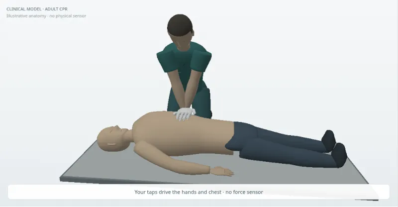

01نسخة تجريبيةTeaching prototype
الإنعاش القلبي الرئويAdult CPR
Adult CPR
البالغون · النسخة ذات النماذج المعدّلةAdults · revised clinical figures
ضغطات الصدر، التهوية وقرارات جهاز إزالة الرجفان.Compressions, ventilation and AED decisions.